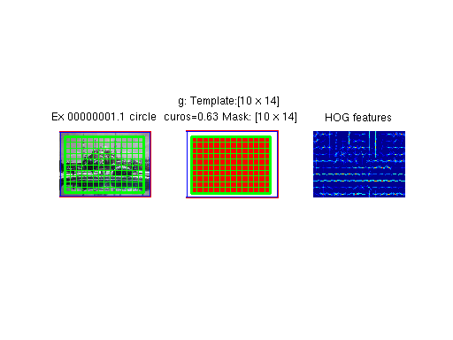
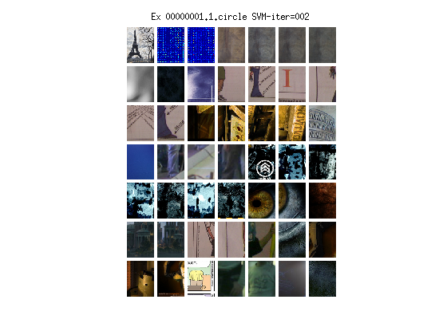
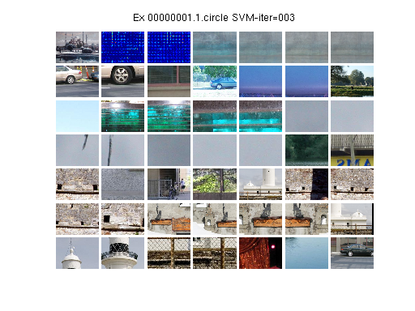

I = im2double(imread('./images/painting.jpg'));
bb = [1 1 size(I, 2) size(I, 1)];
negFolder = '~/datasetImages/';
models = esvm_train_single_exemplar(I, bb, negFolder);
.esvm_get_pascal_stream: length of stream=00001
.initialized with HOG_size = [10 14]

Randomizing mining queue
Found 0022 windows, image:00001 (#seen=00001/00130, max = 35.559)
Found 0019 windows, image:00046 (#seen=00002/00130, max = 33.034)
Found 0014 windows, image:00098 (#seen=00003/00130, max = 36.018)
Found 0039 windows, image:00115 (#seen=00004/00130, max = 24.343)
Found 0024 windows, image:00005 (#seen=00005/00130, max = 32.267)
Found 0022 windows, image:00107 (#seen=00006/00130, max = 35.267)
Found 0013 windows, image:00002 (#seen=00007/00130, max = 39.731)
Found 0022 windows, image:00052 (#seen=00008/00130, max = 31.389)
Found 0015 windows, image:00074 (#seen=00009/00130, max = 33.165)
Found 0026 windows, image:00066 (#seen=00010/00130, max = 41.280)
Found 0009 windows, image:00116 (#seen=00011/00130, max = 30.714)
Found 0014 windows, image:00117 (#seen=00012/00130, max = 38.622)
Found 0042 windows, image:00104 (#seen=00013/00130, max = 31.059)
Found 0025 windows, image:00041 (#seen=00014/00130, max = 34.527)
Found 0010 windows, image:00114 (#seen=00015/00130, max = 34.997)
Found 0010 windows, image:00038 (#seen=00016/00130, max = 34.237)
Found 0051 windows, image:00027 (#seen=00017/00130, max = 21.714)
Found 0042 windows, image:00024 (#seen=00018/00130, max = 28.552)
Found 0011 windows, image:00008 (#seen=00019/00130, max = 39.694)
Found 0052 windows, image:00012 (#seen=00020/00130, max = 31.329)
Found 0026 windows, image:00061 (#seen=00021/00130, max = 22.759)
Found 0034 windows, image:00127 (#seen=00022/00130, max = 32.405)
Found 0020 windows, image:00021 (#seen=00023/00130, max = 33.861)
Found 0007 windows, image:00025 (#seen=00024/00130, max = 32.030)
Found 0032 windows, image:00063 (#seen=00025/00130, max = 37.413)
Found 0033 windows, image:00092 (#seen=00026/00130, max = 26.294)
Found 0041 windows, image:00065 (#seen=00027/00130, max = 30.667)
Found 0017 windows, image:00129 (#seen=00028/00130, max = 35.792)
Found 0034 windows, image:00110 (#seen=00029/00130, max = 35.540)
Found 0038 windows, image:00073 (#seen=00030/00130, max = 32.234)
Found 0021 windows, image:00071 (#seen=00031/00130, max = 35.899)
Found 0022 windows, image:00031 (#seen=00032/00130, max = 36.465)
Found 0016 windows, image:00033 (#seen=00033/00130, max = 35.677)
Found 0015 windows, image:00017 (#seen=00034/00130, max = 36.700)
Found 0010 windows, image:00009 (#seen=00035/00130, max = 38.459)
Found 0011 windows, image:00123 (#seen=00036/00130, max = 39.832)
Found 0018 windows, image:00016 (#seen=00037/00130, max = 37.187)
Found 0024 windows, image:00028 (#seen=00038/00130, max = 33.318)
Found 0012 windows, image:00081 (#seen=00039/00130, max = 35.144)
Found 0013 windows, image:00054 (#seen=00040/00130, max = 31.444)
Found 0015 windows, image:00029 (#seen=00041/00130, max = 35.147)
Found 0019 windows, image:00058 (#seen=00042/00130, max = 36.378)
Found 0035 windows, image:00125 (#seen=00043/00130, max = 31.312)
Found 0011 windows, image:00014 (#seen=00044/00130, max = 35.426)
Stopping mining because we have 1006 windows from 44 new violators
# Violating images: 44, #Non-violating images: 0
-----
Starting SVM: dim=4340... #pos=1, #neg=1006 --- Max positive is 1.000
SVM iteration took 3.240 sec, kept 123 negatives

Found 0014 windows, image:00045 (#seen=00045/00130, max = -0.890)
Found 0008 windows, image:00094 (#seen=00046/00130, max = -0.921)
Found 0006 windows, image:00048 (#seen=00047/00130, max = -0.944)
Found 0023 windows, image:00121 (#seen=00048/00130, max = -0.813)
Found 0043 windows, image:00003 (#seen=00049/00130, max = -0.820)
Found 0032 windows, image:00039 (#seen=00050/00130, max = -0.861)
Found 0031 windows, image:00004 (#seen=00051/00130, max = -0.906)
Found 0007 windows, image:00051 (#seen=00052/00130, max = -0.881)
Found 0007 windows, image:00100 (#seen=00053/00130, max = -0.920)
Found 0022 windows, image:00056 (#seen=00054/00130, max = -0.892)
Found 0020 windows, image:00113 (#seen=00055/00130, max = -0.910)
Found 0013 windows, image:00049 (#seen=00056/00130, max = -0.958)
Found 0005 windows, image:00022 (#seen=00057/00130, max = -0.972)
Found 0022 windows, image:00103 (#seen=00058/00130, max = -0.926)
Found 0012 windows, image:00085 (#seen=00059/00130, max = -0.943)
Found 0008 windows, image:00040 (#seen=00060/00130, max = -0.926)
Found 0024 windows, image:00043 (#seen=00061/00130, max = -0.919)
Found 0003 windows, image:00083 (#seen=00062/00130, max = -0.899)
Found 0020 windows, image:00062 (#seen=00063/00130, max = -0.842)
Found 0006 windows, image:00101 (#seen=00064/00130, max = -0.921)
Found 0006 windows, image:00059 (#seen=00065/00130, max = -0.912)
Found 0014 windows, image:00019 (#seen=00066/00130, max = -0.897)
Found 0025 windows, image:00057 (#seen=00067/00130, max = -0.856)
Found 0005 windows, image:00055 (#seen=00068/00130, max = -0.930)
Found 0005 windows, image:00069 (#seen=00069/00130, max = -0.971)
Found 0023 windows, image:00053 (#seen=00070/00130, max = -0.885)
Found 0013 windows, image:00077 (#seen=00071/00130, max = -0.938)
Found 0021 windows, image:00032 (#seen=00072/00130, max = -0.878)
Found 0014 windows, image:00080 (#seen=00073/00130, max = -0.869)
Found 0004 windows, image:00015 (#seen=00074/00130, max = -0.901)
Found 0010 windows, image:00018 (#seen=00075/00130, max = -0.911)
Found 0021 windows, image:00076 (#seen=00076/00130, max = -0.877)
Found 0061 windows, image:00112 (#seen=00077/00130, max = -0.858)
Found 0022 windows, image:00089 (#seen=00078/00130, max = -0.907)
Found 0009 windows, image:00068 (#seen=00079/00130, max = -0.885)
Found 0008 windows, image:00007 (#seen=00080/00130, max = -0.833)
Found 0002 windows, image:00122 (#seen=00081/00130, max = -0.953)
Found 0013 windows, image:00060 (#seen=00082/00130, max = -0.945)
Found 0030 windows, image:00010 (#seen=00083/00130, max = -0.791)
Found 0007 windows, image:00070 (#seen=00084/00130, max = -0.882)
Found 0019 windows, image:00067 (#seen=00085/00130, max = -0.804)
Found 0022 windows, image:00096 (#seen=00086/00130, max = -0.914)
Found 0020 windows, image:00078 (#seen=00087/00130, max = -0.821)
Found 0020 windows, image:00034 (#seen=00088/00130, max = -0.881)
Found 0015 windows, image:00130 (#seen=00089/00130, max = -0.902)
Found 0003 windows, image:00108 (#seen=00090/00130, max = -0.909)
Found 0012 windows, image:00047 (#seen=00091/00130, max = -0.824)
Found 0018 windows, image:00118 (#seen=00092/00130, max = -0.894)
Found 0004 windows, image:00079 (#seen=00093/00130, max = -0.981)
Found 0014 windows, image:00050 (#seen=00094/00130, max = -0.899)
Found 0003 windows, image:00102 (#seen=00095/00130, max = -0.966)
Found 0004 windows, image:00020 (#seen=00096/00130, max = -0.860)
Found 0006 windows, image:00120 (#seen=00097/00130, max = -0.858)
Found 0016 windows, image:00011 (#seen=00098/00130, max = -0.867)
Found 0003 windows, image:00111 (#seen=00099/00130, max = -0.965)
Found 0013 windows, image:00006 (#seen=00100/00130, max = -0.925)
Found 0017 windows, image:00095 (#seen=00101/00130, max = -0.831)
Found 0001 windows, image:00037 (#seen=00102/00130, max = -0.995)
Found 0024 windows, image:00044 (#seen=00103/00130, max = -0.887)
Found 0015 windows, image:00105 (#seen=00104/00130, max = -0.833)
Found 0016 windows, image:00013 (#seen=00105/00130, max = -0.854)
Found 0015 windows, image:00093 (#seen=00106/00130, max = -0.912)
Found 0037 windows, image:00091 (#seen=00107/00130, max = -0.846)
Found 0009 windows, image:00036 (#seen=00108/00130, max = -0.861)
Found 0009 windows, image:00042 (#seen=00109/00130, max = -0.943)
Found 0004 windows, image:00064 (#seen=00110/00130, max = -0.845)
Found 0010 windows, image:00035 (#seen=00111/00130, max = -0.932)
Found 0006 windows, image:00106 (#seen=00112/00130, max = -0.923)
Found 0003 windows, image:00097 (#seen=00113/00130, max = -0.980)
Found 0005 windows, image:00109 (#seen=00114/00130, max = -0.882)
Stopping mining because we have 1002 windows from 70 new violators
# Violating images: 70, #Non-violating images: 0
-----
Starting SVM: dim=4340... #pos=1, #neg=1125 --- Max positive is 1.000
SVM iteration took 3.330 sec, kept 303 negatives

Found 0000 windows, image:00126 (#seen=00115/00130)
Found 0000 windows, image:00087 (#seen=00116/00130)
Found 0000 windows, image:00026 (#seen=00117/00130)
Found 0002 windows, image:00030 (#seen=00118/00130, max = -0.922)
Found 0000 windows, image:00023 (#seen=00119/00130)
Found 0000 windows, image:00128 (#seen=00120/00130)
Found 0002 windows, image:00099 (#seen=00121/00130, max = -0.975)
Found 0000 windows, image:00086 (#seen=00122/00130)
Found 0001 windows, image:00119 (#seen=00123/00130, max = -0.998)
Found 0000 windows, image:00072 (#seen=00124/00130)
Found 0000 windows, image:00090 (#seen=00125/00130)
Found 0001 windows, image:00084 (#seen=00126/00130, max = -0.981)
Found 0000 windows, image:00082 (#seen=00127/00130)
Found 0000 windows, image:00088 (#seen=00128/00130)
Found 0000 windows, image:00075 (#seen=00129/00130)
Found 0003 windows, image:00124 (#seen=00130/00130, max = -0.957)
# Violating images: 5, #Non-violating images: 11
-----
Starting SVM: dim=4340... #pos=1, #neg=312 --- Max positive is 1.000
SVM iteration took 1.712 sec, kept 294 negatives

### End of training...